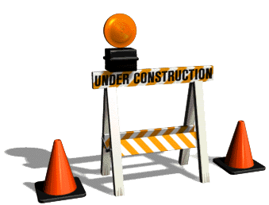
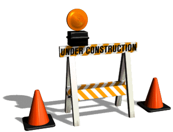

+ Sources, Process, Presentation

+ Timeline
+ Knight Lab Story Map
+ Voyant: Film's With Name in title
+ Knight Lab Storyline: Director Credits
+ Network Map: Co-stars, Directors, and Studios
+ Embeded Video: Clips of Stunts
+ Embeded Video: Clips of Mabel in Disguise
+ Questionable Accounts
+ Scandals
+ Inconsistant Data
Thanks for making it to the end. Enjoy this funny website called crouton.net